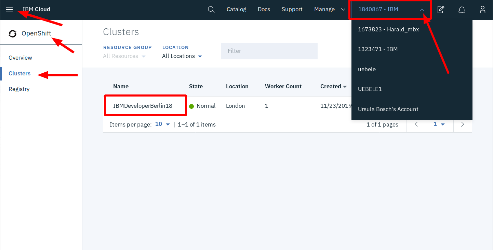

OpenShift on IBM Cloud Instructions¶
WiFI:¶
SSID =¶
Password =¶
-
If you haven't already done so register for a free IBM Cloud Account:
- https://ibm.biz/developer-dach
- Check your emails for a verification mail and click the link within
-
We have created pre-configured OpenShift clusters.
The clusters are located in one of our Frankfurt datacenters (region "eu-central")
To assign yourself to one of these:
- Go to https://fraworkshop.mybluemix.net
- Lab key for this lab is "oslab"
- Enter the IBM ID (the one you registered on IBM Cloud)
- Accept the T&Cs
- Click submit

If everything works you will see a confirmation like this one:

-
Access your OpenShift cluster
- Logon to the IBM Cloud

- Select the
1840867 - IBMaccount in the menu, right side - Open the Burger menu (top left) → OpenShift → Clusters
- Click on the cluster assigned to you, it should be the same from the confirmation above
- Then click on "OpenShift web console"
-
Prepare your work environment
- We need several tools: docker, git, oc, ibmcloud, to name a few
- You can either:
- install those on your laptop or
- use a Docker Tools image we created for this lab or
- use a "Cloud Shell" in a Browser if you haven't installed Docker, can not install, or do not want to install apps on your notebook
- To access Cloud Shell go to https://workshop.shell.cloud.ibm.com/, password is
ikslab. Important: You need to logon with your IBM ID and select your own account, not the1840867 - IBMwhere your cluster resides!
-
The workshop itself is here https://ibm.biz/roks201
- Section "1. Installing Prerequisites" is important
- Ignore the instructions to setup an OpenShift cluster
- The option to use Cloud Shell mentioned above is not documented but you can use the "Tools - Option 3: Install Tools on you Notebook". All the required command line tools are already installed in the Cloud Shell, just start with "Step 2: Get the code"
- Skip sections "2. Running the Java microservice locally" and "3. Understanding the Java implementation". They are optional and will take too much time for this workshop!
- We recommend doing the workshop itself in sequence 4, 8, 5, 6, and 7
- Section "1. Installing Prerequisites" is important